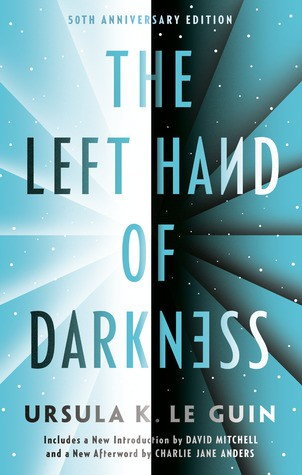

Books · click-through study
One book,
three readings.
Three directions for the page a Book card opens. Same starry shell as the app, same Open Library record underneath — the difference is how the record is staged: a spotlight hero, a magazine spread, or a librarian's dossier. Every metadata value is real Open Library data; the one-line blurbs are prototype copy.

01 · SpotlightLayout 01
The spotlight
The Left Hand of Darkness · Ursula K. Le Guin
Centered on the artwork: a large cover, big serif title, rating and first line, with a compact facts panel riding alongside. The most familiar streaming-service shape.
Open prototype 02 · Editorial
02 · Editorial
Layout 02
The editorial
Project Hail Mary · Andy Weir
The cover becomes atmosphere behind a magazine-style spread: a sticky action rail, the opening line set as a pull quote, and the catalog record read as prose with data.
Open prototype 03 · Dossier
03 · Dossier
Layout 03
The dossier
Beloved · Toni Morrison
A librarian's record card: monospace file header, numbered memo sections, a data sheet, and the subject index as a typeset list. Dense, archival, very readable.
Open prototypeSource material